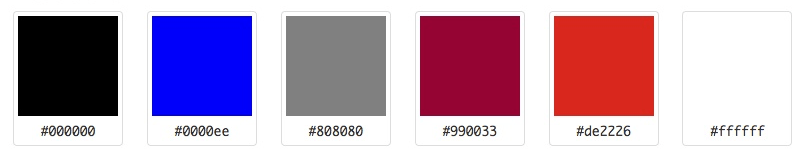
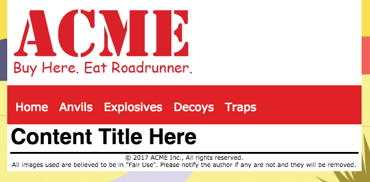
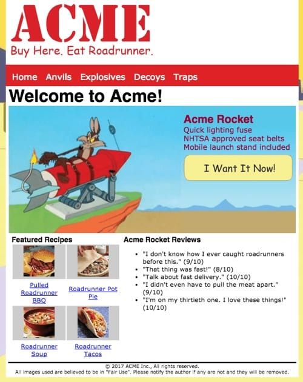
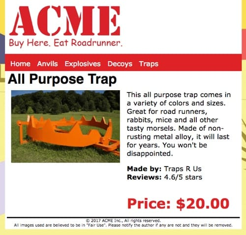

Acme Final Project
Purpose
This final project is a review of the concepts, skills and techniques that should have been learned throughout the semester. It requires you to build a small 5 page site (home page and four content pages) for a ficticous company - Acme, Inc.
Notice!
All html and css must be of your own creation. No outside templates or frameworks are acceptable for this project.
Expectations
This project expects that you can:
- Write semantic and valid HTML5 markup.
- Write valid CSS3, including the use of media queries and Flexbox to implement responsive layouts.
- Implement the basic design principles of Proximity, Alignment, Repetition and Contrast.
- Implement basic usability concepts in the web content.
- Use jQuery with JSON data (including that of your own creation) to deliver content to web pages.
- Do your own work, but you don't have to do it alone.
The Big Picture
This short video demonstrates what the finished project could look like and how it will work.
Tasks
1. Download
A zip file containing a base folder along with subfolders of starter assets should be downloaded, unzipped and placed at the root of your repository folder. All subsequent work with the Acme web site will be preformed here.
2. Edit the JSON File
The content for the four content pages is stored in a JSON file found in the "js" folder of the downloaded seed code and will be used to provide content data using jQuery. You will need to add additional JSON content that will be used to build the site navigation bar:
- Navigation
- The navigation object will have either four sub-objects or an array of four elements.
- The contents of navigation are: 1) Anvils, 2) Explosives, 3) Decoys and 4) Traps
When you are done editing the JSON file you will need to check that it is valid and has correct formatting using the JSON Editor Online.
3. Build a Template
You are to build a generic template for the Acme web site (a template contains no content, it is a generic file from which actual content pages can be built) named "template.html" and stored in the provided "support" folder. The template must:
- Use HTML5 semantic structures (header, nav, main and footer) for page sectioning.
- Be valid HTML5 when completed.
- Include the viewport meta element.
- Include the media="screen" attribute for the css link element.
- Use external CSS for all styling. The CSS must:
- be stored in the provided css folder,
- start with a mobile first approach,
- use flexbox to provide responsive layouts to a variety of screen sizes,
- use a minimum of one media query for larger than mobile screen sizes,
- be valid to CSS3 standards.
- Use the provided images for the logo and background (found in the images > site folder).
- Use the color scheme shown: 
- Use a font set of your own choosing appropriate to the Acme site.
- Weigh less than 150Kb total weight (this leaves 250Kb for content).
- Build the navigation bar:
- Use jQuery to write a function that will execute when the page loads.
- The function must build a link to the "home" page first.
- Then, read the four navigation items from the JSON file and build the remaining four links of the navigation bar.
- Each link should point to a page that matches the name of the content object from the JSON file.
- In order to match web naming rules, the object names in the URL must be made lowercase. But the displayed value in the navigation menu must be title case (starts with a capital letter).
- All five links must be in list items within an unordered list.
- Include the completed navigation bar list into the template file.
- If JavaScript is disabled, use a <noscript> element in the <nav> to display a message that JavaScript must be enabled to use the site.
Example Template
Here is an example of what the finished template could look like:

4. Build the Acme Home page
Having built the template, you will now use it to build the Acme home page. The page must:
- be named "index.html" and be stored at the root of the provided acme folder,
- contain the content as shown in the image below (a text file with the text content is included in the support folder of the download) and images are found in the images folder:
 - the "Home" page content should be within a container that designates it as "home content" and must be visible by default.
- contain a second container that designates it as "product content". This container will need:
- an <h1> element to display the product name.
- an element to display the product picture.
- an element to display the product description.
- an element to display the product manufacturer.
- an element to display the product reviews.
- an element to display the product price.
- be fully responsive to a variety of devices so that the content is consumable across all devices without horizontal scrolling or zooming (including all images),
- use usability concepts, the minimum expectations are:
- links contain title attributes
- images contain alt attributes
- fonts are easily read and contain clear contrast between background and foreground colors
- headings form a meaningful document outline with no levels being missed
- be valid HTML5 and CSS3 code.
5. "Build" the Content Pages
The Acme site is to have four "content" pages. However, since the data is stored in JSON format, this means that you will reuse the index page to display the content based on the navigation link that is clicked. In short, the web site will have five "pages" - Home, Anvils, Explosives, Decoys, Traps - but will use only a single physical page. In modern web terminology, you are building a single page application.
- Write a jQuery event listener that will "listen" to the links in the main navigation bar. When the "home" link is clicked the acme home page should be delivered as normal.
- When any of the other four navigation links is clicked:
- the default action of the link should be stopped,
- the content for that link should be read from the JSON file,
- the content should be injected to the appropriate element within "content" container in the index page
- The "home container" hidden and the "content" container made visible, and
- the page displayed in the browser for viewing.
- If JavaScript is disabled, a message telling the site client that JavaScript is required to use the site must be displayed.
- The content page should display the full-size image on the left and the other content on the right (similar to what you would find on an Amazon.com content detail page — see this example).
- The content must use appropriate markup and be formatted to provide a professional appearance.
- The content page must be responsive, usable and valid HTML5 and CSS3.
- Here is an example of what a finished "content" page could look like:

6. Peer Reviews
When the project is nearly complete, and before submission, collaborate with two other members of the class to conduct a peer review of one another's projects. Consult the Peer Review directions for details.
7. Submission
- Build and test your code in Brackets.
- Sync the code to your GitHub repository online and test there as well.
- Work with your learning team to complete the project and post to and read the weekly discussion board to help one another.
- Check your work to ensure that it meets all of the expectations listed.
- When satisfied that everything is working:
- Create a short video (5 minutes maximum) of the Acme site in operation. Include in the video:
- a demonstration of the navigation bar being clicked and the content being delivered.
- a demonstration of the responsiveness of both "home" and "content" pages.
- a demonstration of the validity of the HTML5 and CSS3 code for the "home" and "content" pages.
- post your video to your YouTube channel and copy the link to the video when published.
- zip the acme folder and name it "230finalproject".
- submit the zip file to the Final Project Code Submission dropbox and add the video URL to the dropbox comment.
- Create a short video (5 minutes maximum) of the Acme site in operation. Include in the video:
Grading Matrix
Consult the grading matrix for details of how the Acme project will be graded.